Map
果報バンタ
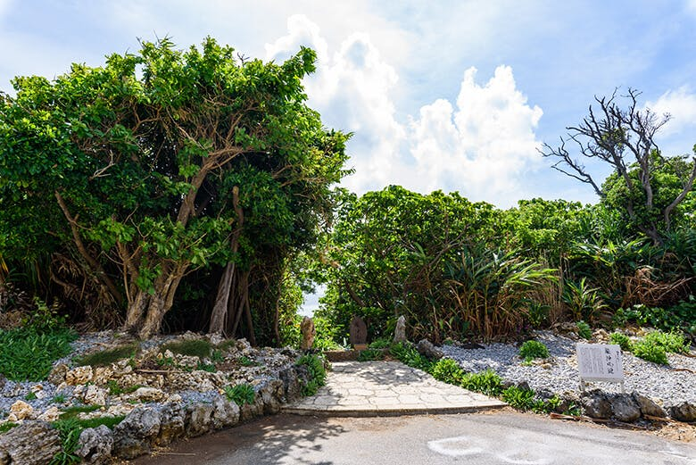 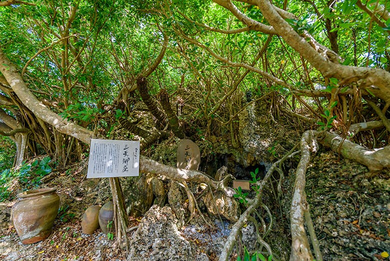 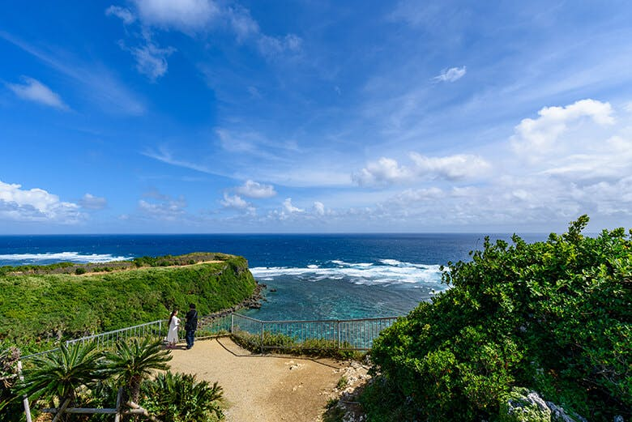 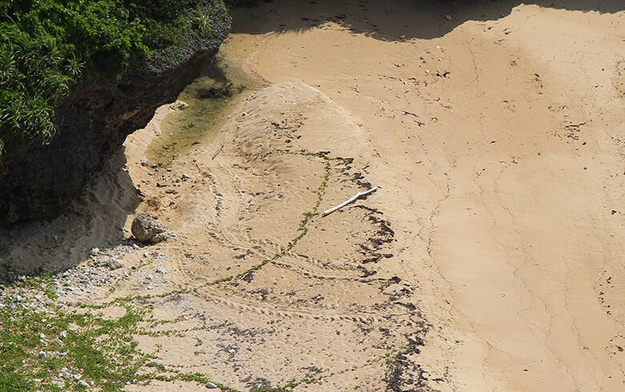
1.幸せな気持ちになれる絶景「果報バンタ」
「果報バンタ」は沖縄本島中部エリア、うるま市の勝連（かつれん）半島と平安座島（へんざじま）をつなぐ海の上の道「海中道路」を通った先にある宮城島の、「ぬち敷地内まーす製塩工場ファクトリー」敷地内にあります（見学自由）。
2.命をはぐくむ天然の砂浜「ぬちの浜」
ウミガメの上陸跡 「果報バンタ」から下に見えるのは、ほとんど人が立ち寄ることのない天然の砂浜「ぬちの浜」。 この浜は、満月の夜にウミガメが産卵に訪れることがあります 「ぬち」は沖縄の言葉で「命」という意味。
3.「ぬちうなー」のパワースポットでリフレッシュ
「ぬちうなー」には3つのパワースポットがあり、それぞれに良いエネルギーがあるとされています。 「龍神風道（りゅうじんふうどう）」は、新しいことに挑戦したい方に良いとされるパワースポット。 沖縄の陸海空の神様が集い、座る場所と言われている「三天御座（みてぃんうざ）」は、「ぬちうなー」の中心部です。 企業のトップに立つ方や、物事を進めるまとめ役の方に良いとされるパワースポット。 選択をするときに正しい方を選べるエネルギーをいただけると言われています。
 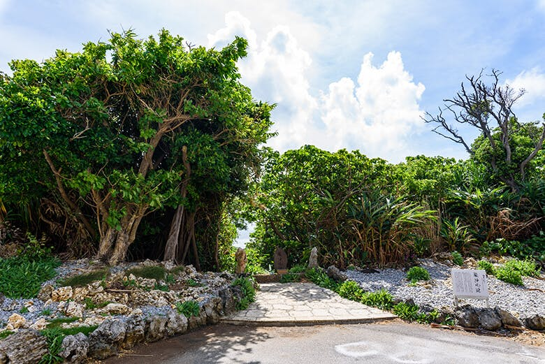
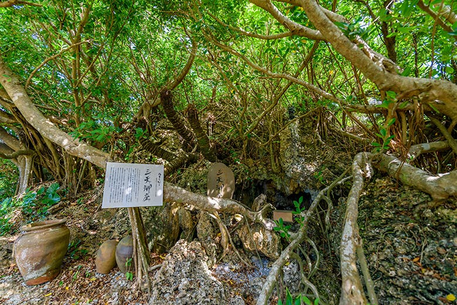
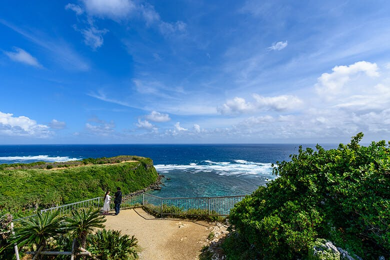
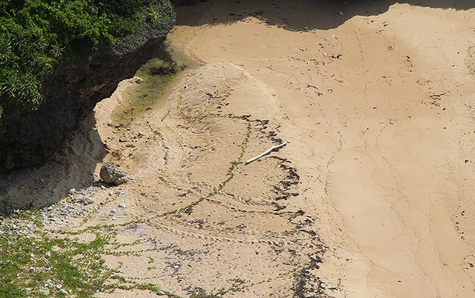
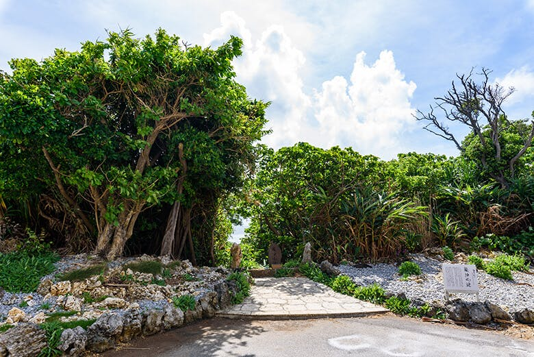
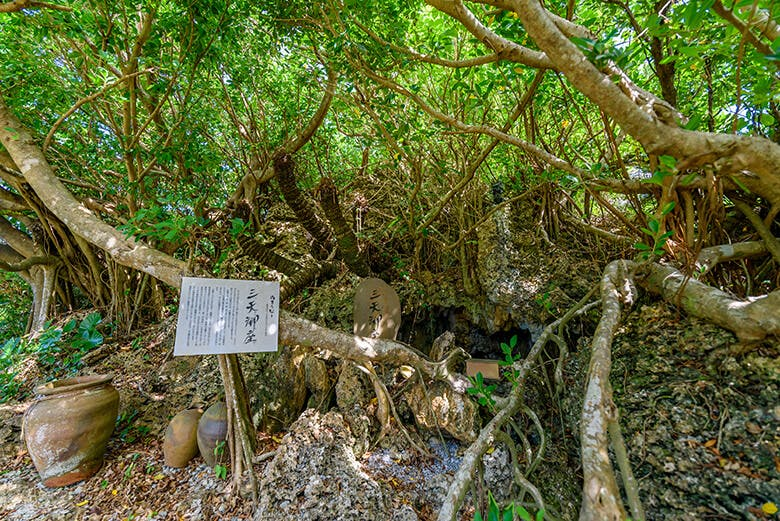
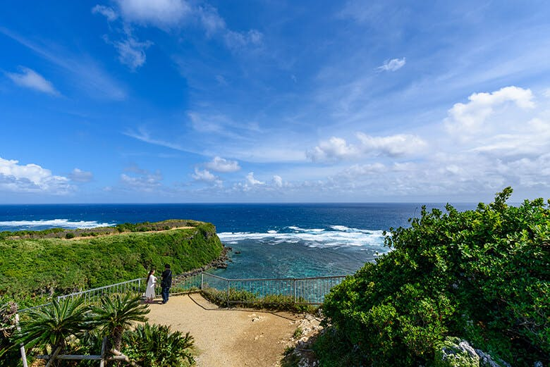
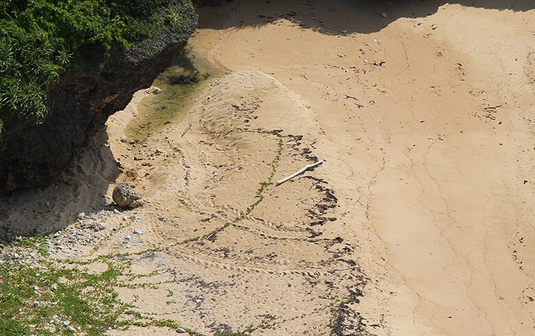
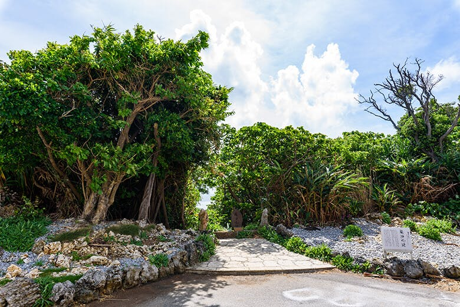
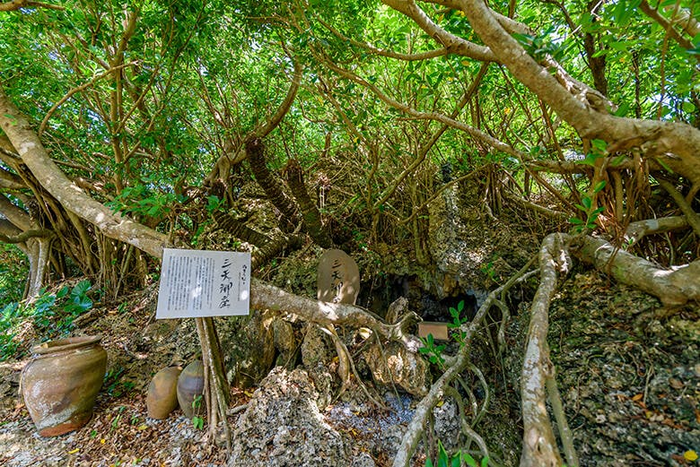
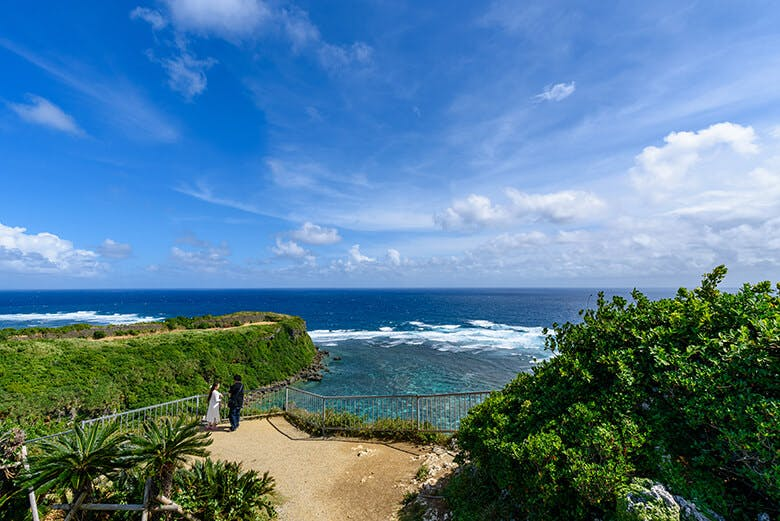
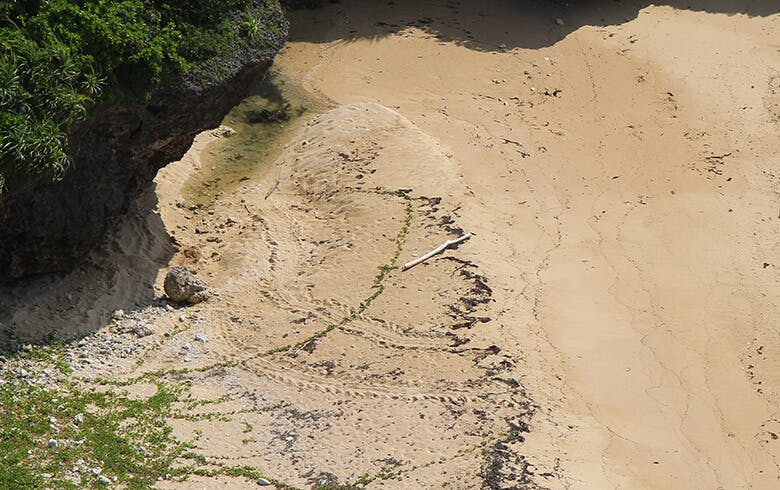
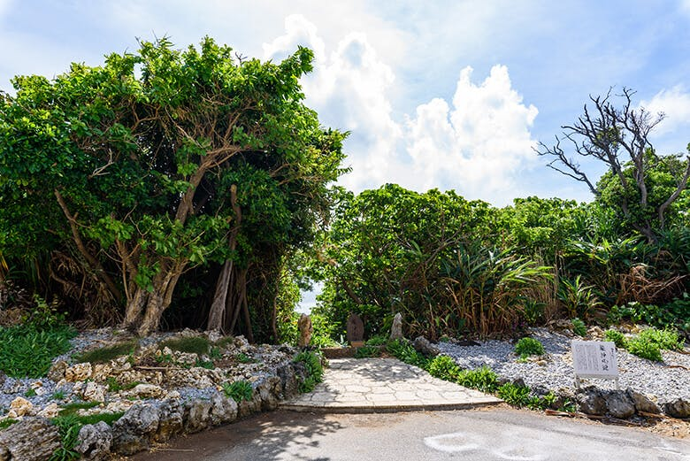
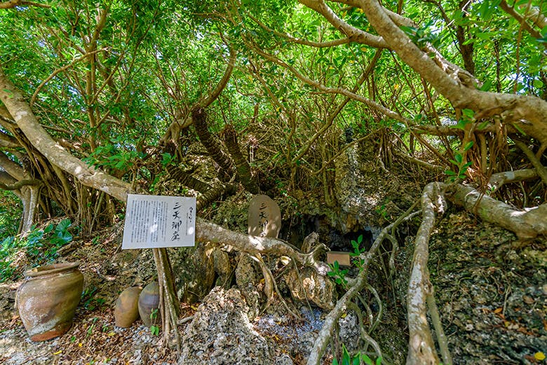
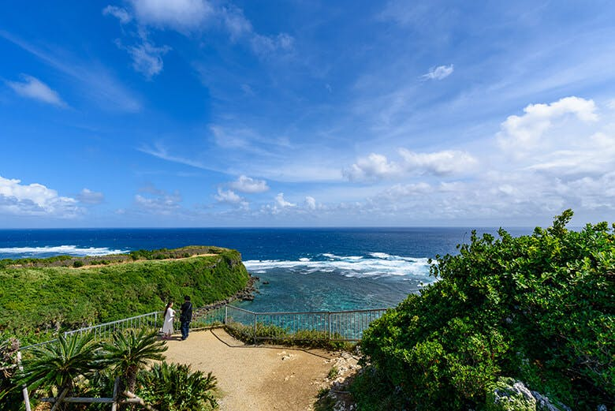
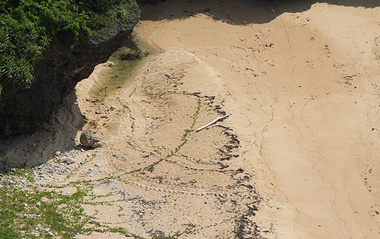